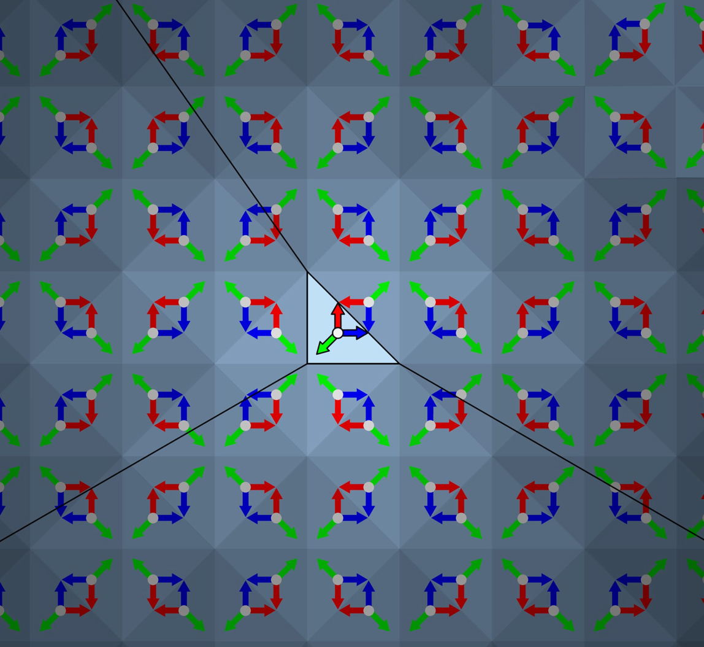
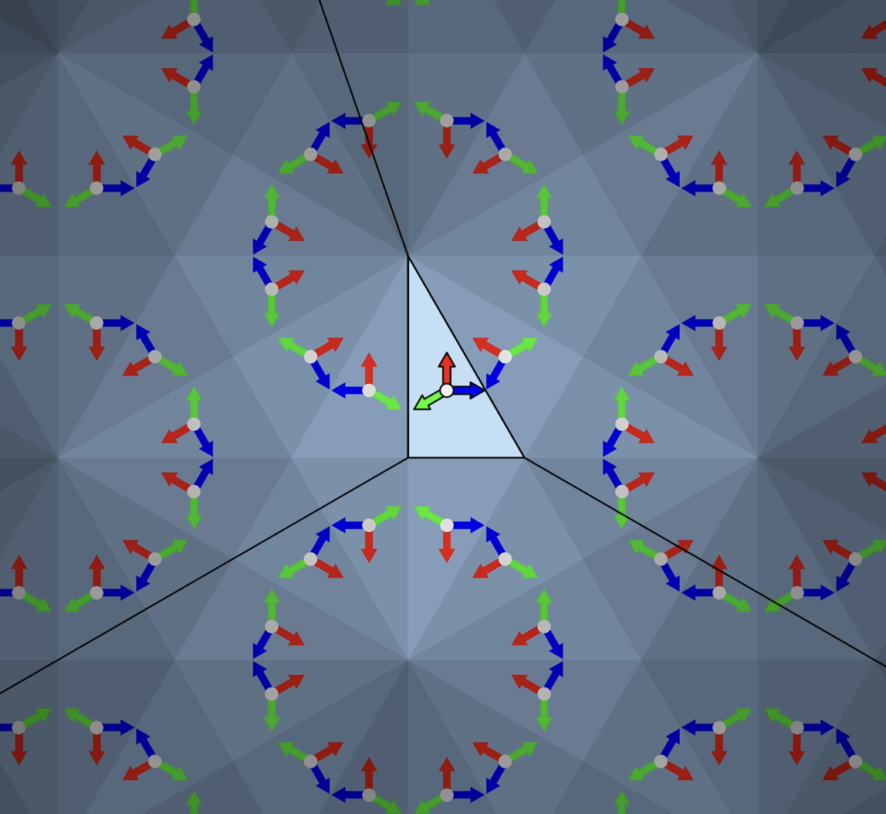
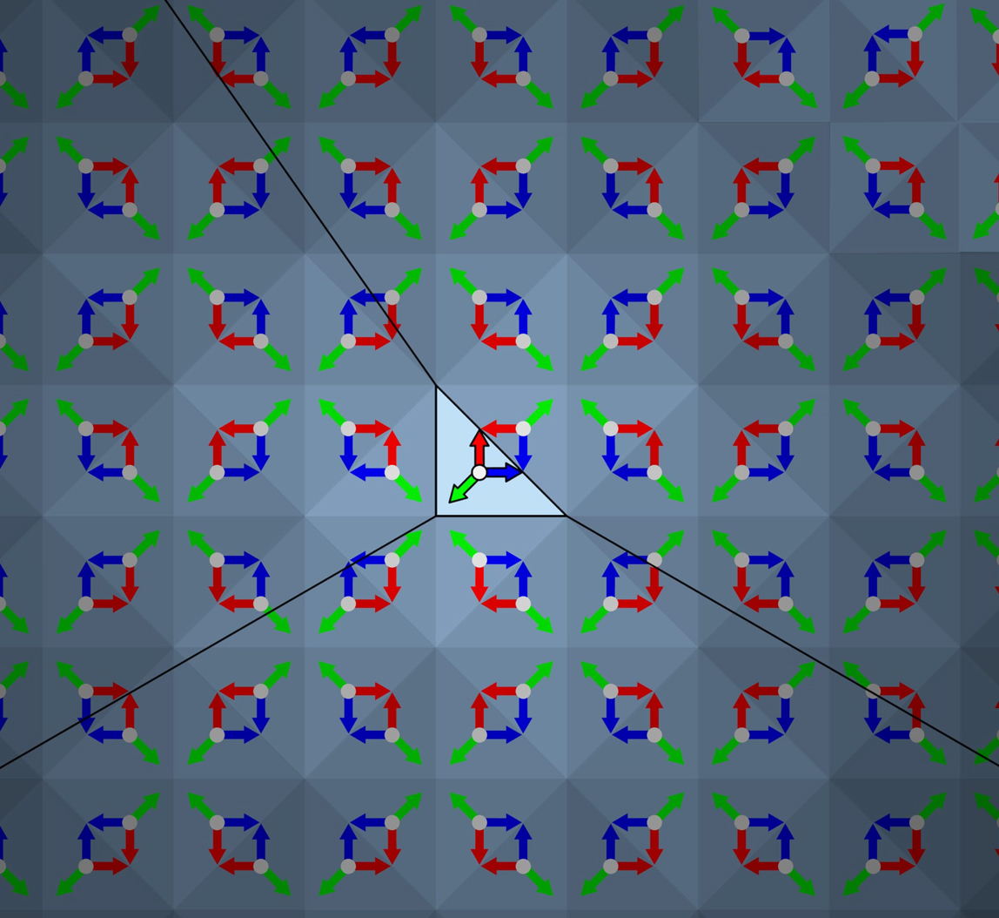
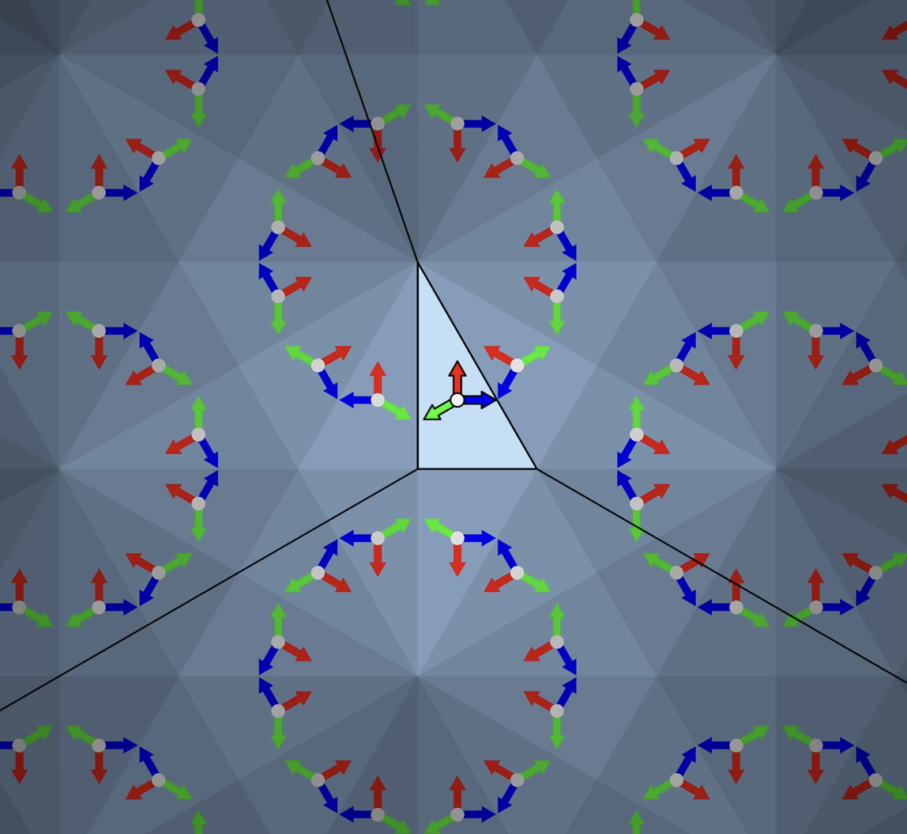

CALEIDOSCOPIO
Cos'è un caleidoscopio?
Il caleidoscopio è uno strumento ottico che, attraverso una serie di specchi inclinati, crea una molteplicità di immagini simmetriche a partire da piccoli oggetti colorati posti al suo interno. Il termine deriva dal greco καλός (kalós), "bello", εἶδος (eîdos), "immagine", e σκοπέω (skopéō), "guardare".
Inventato da Sir David Brewster nel 1816, il caleidoscopio è diventato rapidamente un giocattolo popolare, ma ha anche trovato applicazioni nell'arte e nel design per la sua capacità di generare pattern complessi e affascinanti.
Il caleidoscopio sfrutta il principio della riflessione tra specchi, conosciuto già dall’ottica classica, ma fu inventato come oggetto nel 1816 da David Brewster mentre studiava la polarizzazione della luce. Venne brevettato l’anno successivo. Esso è costituito da tre specchi infilati in un tubo con un buco ad un’estremità e dei vetrini colorati in un doppio fondo dall’altra parte. La costruzione del caleidoscopio venne programmata per il 1817 ma prima che l’oggetto potesse uscire l’idea venne copiata e l’uscita preceduta a Londra e Parigi.
Come funziona?
Il principio di funzionamento di un caleidoscopio si basa sulla riflessione multipla della luce. All'interno di un tubo sono posizionati, longitudinalmente, due o più specchi piani. Comunemente, si usano tre specchi disposti a formare un prisma a base triangolare equilatera.
Ad un'estremità del tubo si trova una camera traslucida contenente piccoli frammenti colorati. La luce che attraversa questi oggetti viene riflessa dagli specchi, creando un pattern simmetrico. Ruotando il tubo, gli oggetti si muovono, generando nuove configurazioni.
Solitamente il numero di specchi impiegati è tre, i quali vengono disposti a triangolo equilatero, in modo da formare la seguente sequenza di angoli: 60°-60°-60° (ma in realtà sono possibili altre due combinazioni: 45°-45°-90° e 30°-60°-90°). Per costruire il caleidoscopio, è stato necessario stabilire il rapporto che vi era tra il diametro del tubo, e la larghezza degli specchi stessi. Si è quindi studiata la proporzione tra triangolo equilatero e la circonferenza ad esso circoscritta.
 



Da sinistra a destra: 60°-60°-60°; 45°-45°-90°; 30°-60°-90°
Le simmetrie
L’immagine del caleidoscopio è originata dalla continua riflessione dei frammenti colorati tra uno specchio e l’altro, moltiplicati in modo apparentemente perfetto. Il processo è quello di una simmetria centrale, e ovviamente il numero delle riflessioni dipende dagli angoli tra gli specchi, che di solito formano un prisma a base triangolare isoscele, riflettente all’interno. Le simmetrie delle forme in movimento del caleidoscopio sono il risultato dell’intersezione dello studio delle riflessioni con quello delle simmetrie centrali, che tante applicazioni hanno prodotto nell’architettura e nelle arti, ma ancora di più nella decorazione degli oggetti.
Laboratorio: Stella con Simmetrie
Esse hanno offerto a Coxeter, uno dei più noti matematici del XX secolo, lo spunto per nuove ricerche legate a spazi n-dimensionali che lo hanno portato alla classificazione dei politopi, che sono gli equivalenti dei poliedri nelle dimensioni superiori alla terza, che possono essere costruiti matematicamente ma solo immaginati nel mondo reale. Coxeter fu interessato dalle simmetrie prodotte dal caleidoscopio e da qui ne derivò lo studio sui gruppi di simmetrie, chiamati Gruppi di Coxeter.
I gruppi di Coxeter sono strutture algebriche che descrivono le simmetrie generate da riflessioni. In termini semplici, un gruppo di Coxeter è un insieme di trasformazioni (come riflessioni, rotazioni, ecc.) che possono essere composte tra loro. In pratica, i gruppi di Coxeter danno un linguaggio matematico preciso per studiare strutture geometriche simmetriche, spesso in modo molto visuale tramite diagrammi di Coxeter.
Tassellatura e Caleidoscopi
Parlando di riflessioni e simmetrie, un elemento fondamentale del principio del caleidoscopio è quello della tassellatura, ossia coprire un intero piano ripetendo una sola figura senza alcuna sovrapposizione e nessuno spazio bianco.
Tali figure geometriche, (dette appunto "tasselli"), sono spesso poligoni, regolari o non, che possono anche avere lati curvilinei.
Ci si può rendere conto che non tutti i poligoni regolari tassellano il piano. Infatti, non è possibile tassellare con pentagoni, perché l’angolo di un pentagono regolare non è un sottomultiplo di 360°, condizione necessaria, per non lasciare lacune nell’intorno dei vertici. Alcuni esempi di poligoni con la quale è possibile tassellare il piano sono triangolo, quadrato ed esagono, mentre con un pentagono è impossibile eseguire la tassellazione poiché la somma dei suoi angoli da come risultato 108°.

La tassellatura può essere regolare e irregolare. Come abbiamo già detto, i soli poligoni con la quale è possibile tassellare regolarmente il piano sono triangolo, quadrato ed esagono, ma si può tassellare il piano anche con due o più poligoni regolari, ottenendo diverse configurazioni.
Esistono tassellature periodiche e aperiodiche.
Una tassellatura periodica è una disposizione di figure geometriche (come poligoni) su un piano in modo tale che la disposizione si ripeta regolarmente.
Invece, una tassellatura aperiodica è una disposizione di figure che non si ripete in alcun modo regolare, pur essendo ordinata e coesa.
Laboratorio Caleidoscopio (Disegno Libero)
Disegna sul canvas sottostante...
Premi SPAZIO per pulire il disegno.
About (Sitografia)
Introduzione storica: Wikipedia - Caleidoscopio
Funzionamento: Giovani per la Scienza
Gruppi di Coxeter: Wikipedia - Gruppo di Coxeter
Video (esempio): YouTube - Esempio Caleidoscopio
Parte matematica: Princeton University - Mathematics In Kaleidoscopes (PDF)